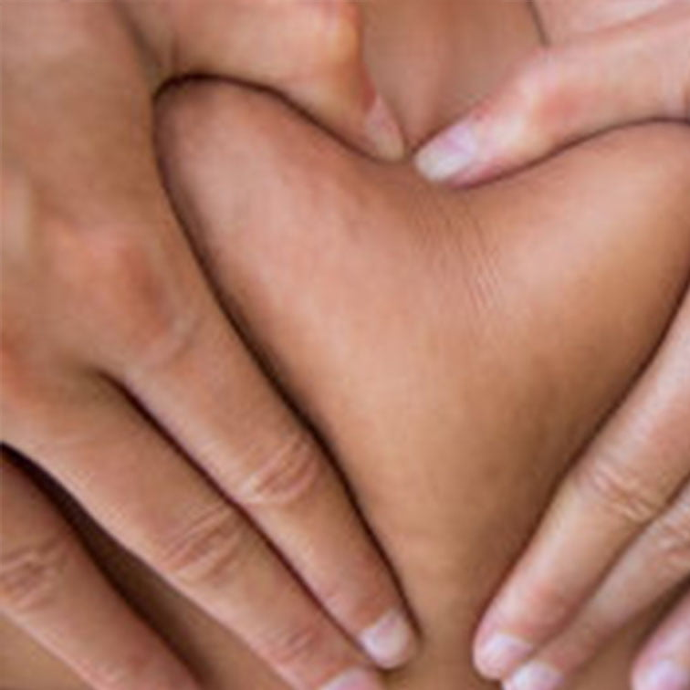
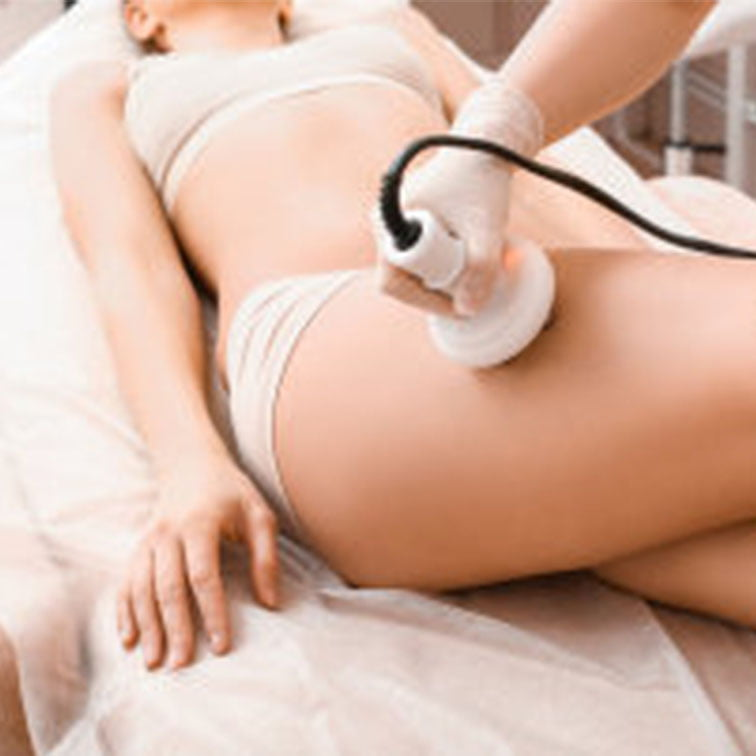
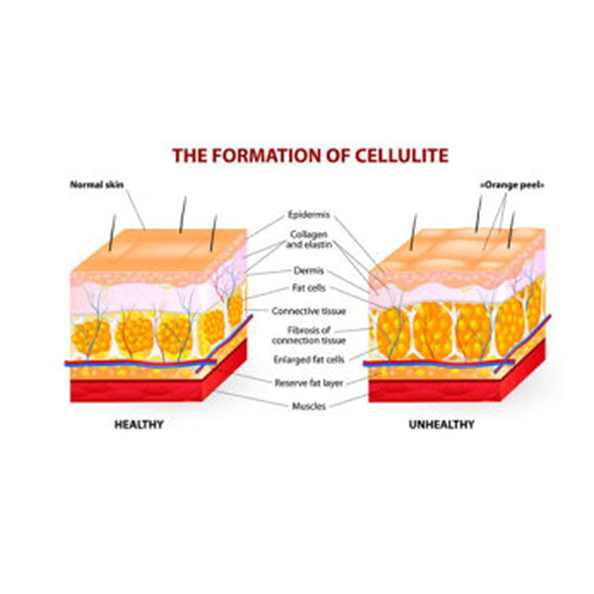
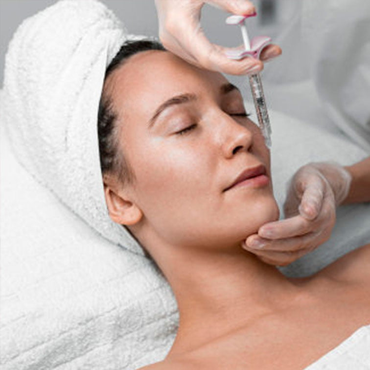

Beauty & Rejuvenation
Rejuvenation for Men
Experience advanced wellness solutions at The Churchill Center's men's rejuvenation clinic in Arcadia. Unlock your potential and feel your best!
View treatment →Treatments · Beauty & Rejuvenation
Get top quality Rejuvenation Treatment for Women. Beauty Therapy from the inside out by doctors. The Churchill Center Arcadia

At the Churchill Center Dr. Churchill has worked with thousands of menopausal women to help them rejuvenate and be the best they can be! We recognize that wellness extends beyond just reproductive health; a holistic approach to your entire body is essential for maximizing life satisfaction and relationship fulfillment. Our comprehensive rejuvenation program addresses all aspects of your health, including hair, skin, thyroid function, muscle tone, and hormonal balance. We are committed to enhancing your physical health, self-image, and self-confidence, promoting beauty from the inside out.
Rejuvenation involves mitigating and reversing the effects of aging through targeted repair and healing. We focus on countering the impacts of aging, environmental toxins, stress, and lifestyle factors to restore a youthful appearance and enhance sexual wellness.
Our services include advanced diagnostic testing using saliva, blood, and urine to evaluate hormone levels, supplemented by the use of bio-identical hormones. We assess HGH and IGF-1 levels and use peptides, HGH, vitamins, and amino acid injections to optimize your health. For weight management, we provide treatments such as Semaglutide, Tirzepatide, HCG, and fat-burning amino acid shots to improve muscle-fat ratios, reduce appetite and cravings, and boost energy. Additionally, we address thyroid issues, including sub-clinical hypothyroidism and Hashimoto’s thyroiditis, and work to balance the thyroid-adrenal (cortisol) axis.
Step into the realm of infinite beauty and experience the transformative magic that awaits you at The Churchill Center. Prepare to embark on an extraordinary journey where time stands still and your inner goddess takes center stage. Our rejuvenation treatment for women are not just about restoring youthfulness; they are an artistic expression, a symphony of self-discovery, and a celebration of your unique radiance.
Here, we transcend the ordinary, weaving together the threads of science and artistry to create a tapestry of timeless beauty. Allow us to unveil the secrets of stem cell beauty, a harmonious fusion of cutting-edge innovation and ancient wisdom. Immerse yourself in the extraordinary power of our meticulously crafted therapies, designed to ignite your inner glow and awaken your true essence.
As you surrender to the expert hands of our skilled practitioners, you will be transported to a world where every touch and every treatment is a brushstroke on the canvas of your beauty. Feel the transformative energy of stem cells, the whispers of rejuvenation that exosomes bring, or indulge in the comprehensive wonders of our exclusive Renew Package. This is your personal masterpiece in the making.
Let your spirit soar as you embrace the symphony of rejuvenation that unfolds before your eyes. At The Churchill Center, we believe that true beauty is a reflection of your inner radiance, a testament to your strength and resilience. It’s time to rewrite the narrative of aging and embrace the artistry of self-care with stem cells, exosomes, or renew package.
Discover the transformative journey of rejuvenation for women at The Churchill Center, where every treatment is an ode to your unique beauty. Unveil your goddess within and let your light shine brighter than ever before.
Ozone therapy represents a promising new approach for addressing female reproductive health and offers a range of additional benefits. This cutting-edge treatment may enhance sexual function and alleviate urinary incontinence, with many women reporting significant improvements in stimulation and reduction in urinary incontinence as early as the first day following the 20-minute procedure.
The O-Shot, when combined with bio-identical hormone therapy and EPAT treatments, can effectively combat vaginal dryness and discomfort during intercourse. These therapies are designed to improve sexual arousal, increase orgasm intensity, boost sexual desire, tighten the vaginal opening, and reduce pain (dyspareunia) during intimate activities.



Extracorporeal Pulse Activation Technology (EPAT) is a leading-edge, noninvasive treatment approved by the FDA for its effectiveness. This advanced technology utilizes pressure waves to stimulate metabolic activity, improve blood circulation, and accelerate the reduction of cellulite while promoting healing. When combined with our Super Skinny Shot Package, you can achieve a lighter, more refined appearance and enhanced well-being within 1-2 months, with noticeable results often visible in just a few weeks.
Our PRP, Exosome, and Stem Cell Facials offer cutting-edge solutions for rejuvenating your skin with scientifically advanced techniques. Platelet-Rich Plasma (PRP) therapy uses your own blood to harness growth factors that promote collagen production and skin healing. Exosome facials utilize cellular signaling molecules to enhance cellular regeneration and repair. Stem cell facials leverage the power of stem cells to stimulate new cell growth and improve skin texture. Together, these treatments work synergistically to restore youthful radiance, improve skin tone, and address signs of aging. Expect noticeable improvements in skin appearance and vitality within a few weeks, with optimal results visible over the following months.

Beauty & Rejuvenation
Experience advanced wellness solutions at The Churchill Center's men's rejuvenation clinic in Arcadia. Unlock your potential and feel your best!
View treatment →Beauty & Rejuvenation
Explore The Churchill Center's anti-aging skincare products, supplements, creams, and serums designed for women. Achieve youthful skin in Arcadia!
View treatment →The Churchill Center · Arcadia
Consultations in person or virtual.